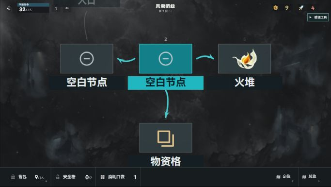

真实原图与当前游戏区域：同宽对照
原图本体保留，仅以同宽图片展示比较占屏比例。这是参考板，不是新游戏截图，也不是多尺寸游戏测试。三张图片已直接通过 view_image 查看；实现和交互验收由主任务完成。
 真实原图 IS3 · 1280×720。白/青路线亮芯约5px；主节点有光晕与开放框。标签含英文类别与中文名，整条约206×22，不作为本作四汉字标签宽度。
真实原图 IS3 · 1280×720。白/青路线亮芯约5px；主节点有光晕与开放框。标签含英文类别与中文名，整条约206×22，不作为本作四汉字标签宽度。
当前本作游戏区域 · 683×385。当前底板约110×61，标签156×28；固定尺寸在683宽图中占比较大。它不是主任务683×948自然窗口的完整截图。 真实原图 IS6 · 1200×554。确有约104×38的纹理节点板；可见事实不能概括为原作完全无底板。右侧详情面板不属于本次节点标签尺寸依据。同一当前本作图，仅并列参考。拟保留六类手绘图源，去常态实心板；glyph约50/1280屏宽、路线亮芯5/1280屏宽，当前中文标签短青底、其余纯文字。
真实原图 IS6 · 1200×554。确有约104×38的纹理节点板；可见事实不能概括为原作完全无底板。右侧详情面板不属于本次节点标签尺寸依据。同一当前本作图，仅并列参考。拟保留六类手绘图源，去常态实心板；glyph约50/1280屏宽、路线亮芯5/1280屏宽，当前中文标签短青底、其余纯文字。本作推断目标：683宽时glyph约26.7px、20px基准标签约10.7px高、5px基准路线约2.67px。中文字可读性须主任务实页判断。头像与快行来自老板最新需求，静态方舟图片不证明本作头像或动画。
查看差距 → 目标 → 实页判断指标